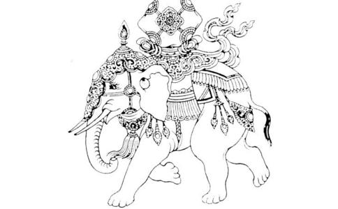

有一次，如来在
佛就说，这个有一些原因，我在
由于象师并没有完全预料到会如此，所以就发生一件事情了，因为这头很年轻的大白象，它突然看到有许多的母象，它们在莲池的地方正在饮食，它年轻气盛然后就随着它的情欲，它就发情，于是它就开始追逐这群母象。这群母象看它追过来以后，就舍弃莲池上面的这些食物，然后就开始奔跑；由于这头大白象它体力很好，因此它就开始发足狂奔，一下子大家都赶不上了，眼看着要跑进森林里面了。
这时候，国王他的王冠、衣服，还有所有的一些装饰、一些璎珞全部都已经掉了，甚至破碎了，头发也乱成一团，他已经完全不知道怎么办；后面的人也想，国王大概是一命呜呼啊！因为他们根本也不知道这大白象跑去哪里了，眼看着就要跑进森林里面，森林里面树枝大树更为复杂，想必这性命是难保了！于是国王就说：“我命休矣！怎么会这样呢？”然后就向象师大声问：“接下来怎么办呢？”象师就跟他讲：“大王！前面跑进去森林里面，你记得看到有大树靠近你的时候，你就死命地抓住那些树枝，千万不要放手，这样就可以离开这只大象了。”等到国王看见迎头有一枝树枝，就勇猛一跳，就抓住了，就可以脱身了。象师也在前面不远处，也跟着下来。
回来之后，看着国王整个神色非常地落寞，看起来非常的忧伤，全身衣服都破碎了，而且身上也不断地流血、受伤，不过还好只是皮肉之伤。因此他在想，可能国王会不会是担心这头大白象等等，因此就上前告慰：“大王！你不需要有苦啊！不用担心那头大象。这只象跑不远，它一定吃不惯外面的饮食，外面的水都那么脏、都那么混浊，它想一想以后就会回来了；所以等它情欲消退以后，它就不会再去对那些母象作种种的思念，回到宫中以后，我们再用好的饮食来给它，那这样它就可以安住了。”结果他没有想到，实际上这国王心里面已经是非常地百念俱灰，怎么说呢？他就说了一句话：“我再也不需要你和这头大象了，我差点就命丧于此，我怎么还要想那头大象要不要回来呢？”他这么说以后，这时候这位象师也不知道说什么，他想：“不然就等到那头大象回来再说了。”这时候，其他的大臣远远被抛在后头，他们想大王一定铁定被害死了。他们沿途就拾起掉落的王冠，破碎的衣服还有这个血迹，然后循着大象所跑这个足迹，最后慢慢地就找到国王，赶快骑着别头的大象回去。
果然外头的这头大白象，它是吃不惯野外的饮食，而且它的情欲很快地就消退了；于是它就开始思念当初豢养在宫廷中美味的饮食。它一想到以后，就很快地回到皇宫里面来了；象师看见了之后，他很高兴这头大白象终于知道回来了，于是他赶快去报告国王，他说：“大王啊！这头大白象它回来了，希望大王您可以过去看看，我现在已经把它调理好，它身体一样
国人听说象师准备教导，或是显示调理大象的方法，于是当天就蜂拥云集在会场上，想看看、一睹究竟。等到国王坐定位之后，象师就带着这头大白象进入会场，而且命令旁边的工匠师做了七颗的大铁丸，这大铁丸做好又用烈火把它烧烤，在一旁烧起来以后，烧到整个滚烫、整个通红。大家并不知道到底这个铁丸是要做什么？原来它是在驯服大象所用的一个工具——就是说如果大象不听话，那就可以用这个工具。
可是这时候，象师就想到一件事情：因为看起来大王好像完全不再要这只大白象了，如果这个七颗大铁丸吞下一定会死，到时候大王应当会反悔，我是不是再替这只大白象来求情呢？于是他就再跟国王说：“大王！这只大白象宝它是转轮王才应该有的宝物，是不是今天可以顾念它只犯了这个小过失，然后就赦免它、不要舍弃它，它是一个难得的宝物。”可是这位国王他已经铁了心，他说：“当初你没有驯服好，你没有把它调理好，就不应该叫我来骑它。如果它真的驯服好，又怎么会发生之前那件事情呢？我命都差点掉了，我以后再也不需要你，还有这头大象了，你不用再多说了！”这时候象师就继续说：“大王！你不需要我，但大象未免太可惜了，因为这大象还是很难得……”结果话语还没有说完，这时候国王已经勃然大怒，就马上斥责他说：“你给我滚远一点！”一斥责以后，两边的侍卫一上前，于是象师就只好起身。他马上泪水就流下来，敬爱的大王再也没有亲疏可分，心里面瞋恨这只大白象，也瞋恨我。所以就往后告退，眼看着这头大白象就没有命了。
与会的大众，本来是欢欢喜喜来看怎么样驯服大象，结果看起来好像不是如此，显然大王是要它一命呜呼！因此大家知道了接下来会发生事情以后，心中不免悲痛，于是看着大象，也看着象师会再怎么样。于是象师就作手势来告诉这头大象：“你就把这铁丸吞下去吧！国王没有原谅你。如果你不吞下，我就用铁钩把你的脑子钩破。”大象虽然不懂人话，可是它知道驯象师的意思，因此它就想：“我再怎么样，也只能够把这个热铁丸把它吞下去，因为如果要我脑子被铁钩钩破，我实在是没有办法忍受。”它又动了一念，想要向这个大王求情，于是它前面两条腿就跪下来，并且流出眼泪向大王求饶——求饶它一命。
然而，国王正在气头上，看了一下没有什么特别的感觉，很快头就偏向另外一方。这时候象师眼看如此大势已去，于是就斥责这只大象：“你为何到了现在还不肯吞下这个铁丸呢？”大象再看看四周人们，它想：“这下真的没有谁可以来救我了。”于是心下一凛、一冷，于是就将鼻子拾起这个热铁丸吞下口中。一下子，这个铁球就跑到腹部，腹部以后就直接燋烂，马上就掉落到地面，还是非常地火烫，还是热度非常的高。
在场的大众，看到这活生生的悲剧，都不免感到哀戚。这时候，国王果然大惊失色，马上就后悔，他在想：“怎么会这样呢？”因此就召象师来问：“这头大象怎么会这么乖、这么调顺呢？你命令它做什么，它就做什么。那当初跑进森林里面，它为什么完全是那样不受控制呢？这到底是怎么一回事呢？”
这时候，天上净居
这时候，大王听到佛的名号非常地惊吓，然后全身毛发竖立，他说：“你说的佛到底是世间哪一种种性出身的呢？我为什么都不知道呢？”这时候象师就回答说：“佛是两种种性出身的：一个是智慧，一个是大悲——就是大悲心。祂精勤地修学
于是，他赶紧入宫，然后用香汤来澡浴，再穿着上新的衣裳，这时候步上高楼楼阁，向四方来作礼、礼敬，并且对众生发起了大悲心。于是他燃烧茗香来发广大誓愿，他说：“愿我所作的一切种种功德，都回向我能够将来成就佛道；将来我成佛的时候，可以自己调心，也可以调伏众生的心。如果有任何一位众生，他必须要我到
所以，本师
这故事告诉我们：我们只要决定好应当怎么样向佛道，而不用顾忌是不是会有许许多多的因缘或环境的因素；而能够想成就佛道，他不论是大小因缘，都应该从发菩提心这样来作起。
所谓发菩提心，就像是世间的人他会想：最近发生空难，那些死伤的人他们非常可怜，我们是不是可以用钱财，或是替他们作功德造福来回向。而菩提心超过这个，因为菩提心它不是供养十方无量无边世界一切众生，甚至说一大劫给他们房子、车子、钱财，甚至一切食衣住行优渥的环境这样可以比拟的。
那你说：那我们如何在教导这样十方无量无边的所有众生，然后教导他们